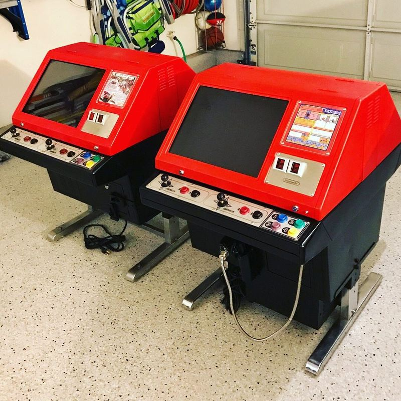

The Red Tent
Nintendo built a sit-down arcade machine with a bright red canopy roof, and most people have never seen one in person. This is the story of the one in the game room — and the twin that got away.
In 1984, Nintendo's VS. System put NES-grade hardware into arcades a full year before the NES itself reached American living rooms. Most VS. machines were uprights — but for bars, pizza parlors, and anywhere people sat down with a drink, Nintendo built something stranger: the VS. DualSystem cocktail, a table-style cabinet with two screens back-to-back, two sets of controls, and a peaked red canopy over the top that earned it the nickname collectors use to this day — the Red Tent. Two players could face each other across the table playing two different games at once, each on their own screen, sharing one set of guts in the middle. It looked less like an arcade machine than a tiny circus tent that wandered into a tavern, and that's exactly why people love it.
Far fewer cocktails survived than uprights. Sit-down machines lived hard lives — drinks sweat rings into them, they were low enough to become furniture, and when routes retired them, a table with a big red roof was harder to repurpose than a standup cab. Finding one at all is an event. Finding one worth saving is rarer still.
This one turned up on Craigslist in Northern California — far enough away that getting it meant committing a whole day to the drive. It was beat up when it arrived: the kind of machine you buy on potential, not condition. Not long after, a second Red Tent surfaced and joined it, and both went through the same treatment — the most intensive restoration ever done at Orlandu's Arcade. Both machines came apart completely, down to the last screw: every part cleaned, serviced, and reassembled. The monitors came out burn-free — remarkable for hardware that spent the '80s running attract modes in public — and were fully serviced before going back in. When it was over there were two perfect Red Tents standing side by side, which is likely more than most collectors will see in a lifetime. Eventually the twin moved on to another collection; the better story stayed here.

Today the surviving Tent runs VS. Excitebike on one side. The other side holds something genuinely rare: an official Nintendo PlayChoice-10 conversion kit. Starting in 1988, Nintendo sold kits to convert its own aging cabinets — Donkey Kong, Donkey Kong Jr., Popeye, and VS. machines — into PlayChoice-10s, its "ten games in one cabinet" system. The PlayChoice flipped the arcade formula on its head: instead of buying lives, your coins bought time. Feed the machine, and a countdown starts; press the channel-select buttons and you can hop between up to ten interchangeable NES game cards mid-session — finish a Super Mario Bros. run, flip to Excitebike, all on the same quarter's clock. The games themselves lived on swappable ROM cards, which is why operators loved it and why Nintendo could keep a single cabinet fresh for years. Full PlayChoice cabinets survive in fair numbers; the official conversion kits, sold loose to operators and mostly used up decades ago, almost never do. Having one installed in a Red Tent makes this machine a double rarity — one table, two eras of Nintendo's arcade thinking, facing opposite directions.
Sources & further reading: Super Mario Wiki — PlayChoice-10 · Museum of the Game